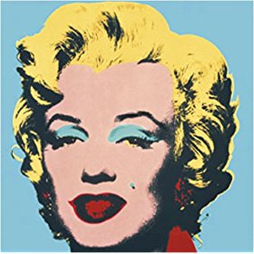

Le Pop art est un mouvement artistique né dans les années 50. Le concept du Pop art est représenté par les artistes dans l'attitude donnée à l'oeuvre plutôt que par l'oeuvre d'art elle-même.
Le Pop art est un mouvement artistique qui a émergé au milieu des années 50 en Grande-Bretagne et en parallèle vers la fin des années 50 aux États-Unis. Le Pop art a contesté les traditions en affirmant que l'utilisation d'éléments visuels de la culture populaire produits en série est contiguë avec la perspective des beaux-arts depuis que le Pop art enlève le matériel de son contexte et isole l'objet, ou le combine avec d'autres objets, pour la contemplation. Le concept du Pop art se présente plus dans l'attitude donnée à l'oeuvre que par l'oeuvre elle-même.
Le Pop art est l'un des mouvements artistique principaux du 20ème siècle. Caractérisé par des thèmes et des techniques tirés de la culture de masse populaire, tels que la publicité, les bandes dessinées et les objets culturels mondains. Le Pop art est largement interprété comme une réaction aux idées dominantes de l'expressionnisme abstrait.
Yolo